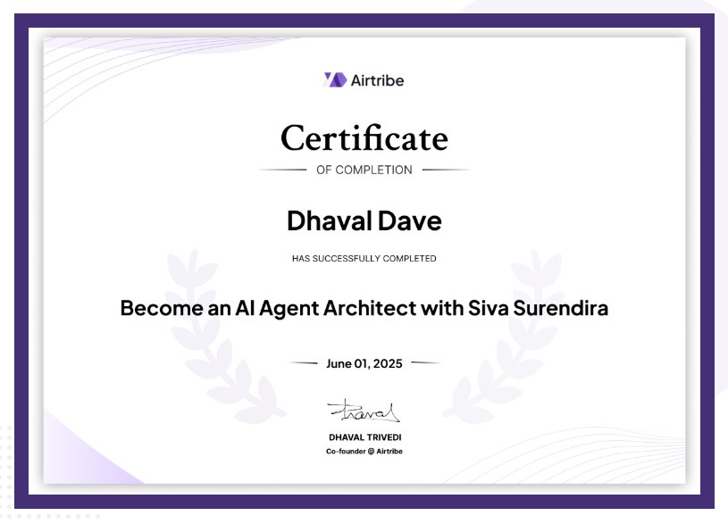
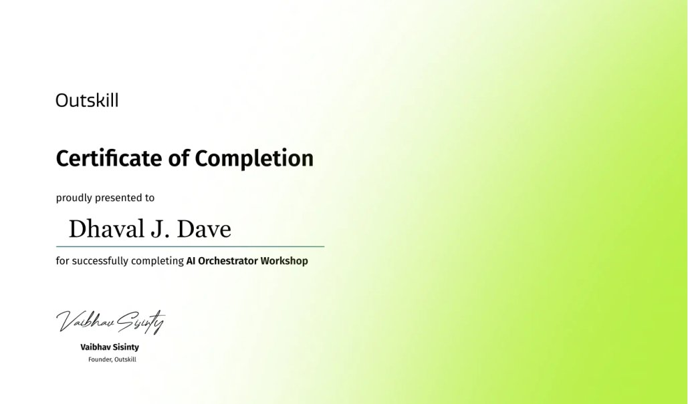
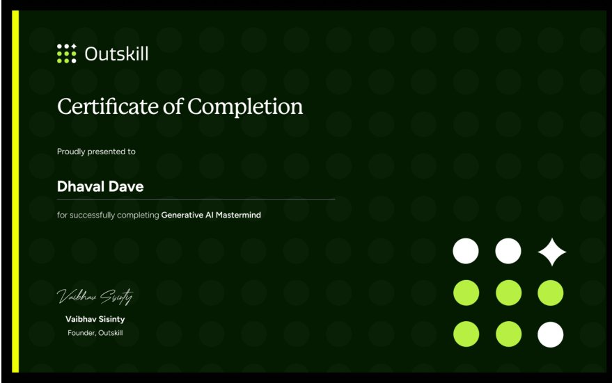

Certificates and learning
My formal qualifications come first, followed by the AI and automation courses I have taken to stay current. My hands-on proof is on the Projects and AI Automation pages.
Formal certifications
- Advanced Diploma in Computer Application, DOEACC A-Level, AICTE (2002)
- Business Professional Programmer, DOEACC O-Level, AICTE (1999)
- Diploma in Computer Programming & Application (DCPA), National Centre for IT, UK (1994)
- Diploma in Information & System Management (DISM), APTECH Computer Education (1994)
AI and agents learning

Become an AI Agent Architect
Airtribe, June 2025
Course on designing AI agents. Supports the agent and automation work on my AI Automation page.

AI Orchestrator Workshop
Outskill
Workshop on orchestrating AI tools and agents into working workflows.

Generative AI Mastermind
Outskill
Hands-on programme covering generative AI tools, prompting and building with AI.
Short workshops and masterclasses
- Claude AI, Skill Nation live workshop, October 2026 (view certificate)
- MS Office with Claude AI, Skill Nation live workshop, October 2026 (view certificate)
- Business Analytics with Power BI, Skill Nation live workshop, October 2026 (view certificate)
- Generative AI Tools, Skill Nation live workshop, October 2026 (view certificate)
- 30 Days Masterclass in Artificial Intelligence, Pantech.ai (2025, certificate of participation)
- Python for Data Engineering Roles, Bosscoder Academy (masterclass, certificate of participation)
Workshop and masterclass certificates show learning, not formal qualifications.